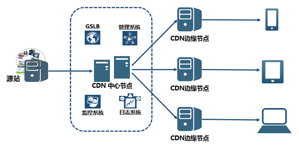
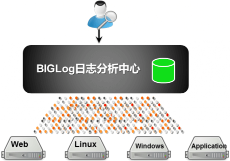
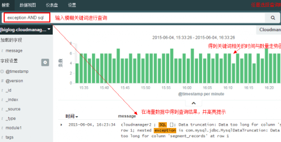
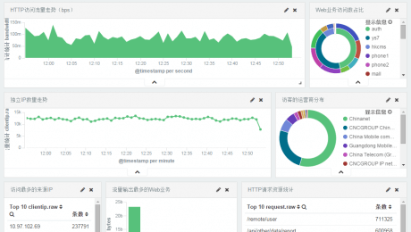
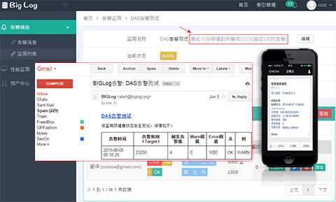

企业威胁感知系统
零成本、零侵入的部署方式，帮助企业从容应对频繁迭代的系统和业务上线
智能威胁建模
极具智能的资产发现与自动化威胁建模引擎，为企业梳理风险资产;实现在海量业务、域名、服务及应用中明晰威胁趋势，捕获脆弱短版
安全漏洞：
覆盖OWASP安全漏洞类型，包括各类通用漏洞、API漏洞、系统服务漏洞等
运维风险：
智能识别企业基础设施、系统服务组件，检测应用、系统服务中的危险配置与安全威胁
威胁情报：
侦查互联网资源中与检测目标关联的敏感信息，可能包含雇员，企业邮箱，企业资产等相关敏感数据
开放安全接口：
漏洞跟踪与灵活的团队协作，开放的第三方接口，高效衔接安全开发（SDL）与运维管理
云CDN解决方案
IDC企业作为互联网内容服务商的部署载体，在发展CDN业务上具备天然的资源优势及客户优势。越来越多的IDC企业开始在自有资源的基础上，开展CDN网络加速服务。
IDC企业若完全采用自主研发CDN会受到研发及运营成本高、人员技术水平要求严格、搭建周期长等不利因素限制。三矛科技凭借在CDN及IDC领域的深耕，推出IDC企业自建CDN解决方案，可帮助IDC企业快速实现自建CDN网络部署。
解决方案特点：

- 1、提供自建全套的CDN系统模块，包括缓存系统、调度系统、管理系统、监控系统等；
- 2、提供静态类、下载类、音视频点播类、直播类等各类业务加速模块；
- 3、根据客户业务需求，提供全套方案设计、设备选型及系统部署建议；
- 4、提供完整的售前、售中及售后支持，可开展完善的系统及运维技术培训；
- 5、7*24小时客户服务实时保障问题在第一时间得到响应及解决。
解决方案优势：
- 1、采用三矛成熟的商业软件，具有快速部署的特点，可大幅缩短方案部署周期；
- 2、模块化系统设计，可根据客户自身需求灵活选择功能模块，同时便于系统升级扩充，实现贴合用户的精细化组网需求；
- 3、可视化配置图形界面，易于上手操作，系统易用性提高；
- 4、获得8年系统稳定的运营经验及运维流程。
大数据解决方案
中心化的数据采集与管理
- 将IT日志进行集中化收集并存储，形成日志管理体系！
- 索引范围可涵盖应用、服务器、网络设备中的所有日志、配置、信息、trap、告警以及其他系统性能数据。
- 用户通过三矛，可以将企业内部IT系统的日志数据，进行汇总收集至三矛日志分析中心，即方便了日志集中化管理，同时满足了日志合规化的要求。


随心所欲的搜索
- 对企业内的海量IT数据实现类似 Google 的搜索 – 快速返回任何关键字或短语的搜索结果。
- 通过搜索框，可立即搜索所有IT设备中任一格式的事件，通过交互式对比查询，可快速收缩事件范围。
- 实现对不同数据中心、不同地理位置、多服务器间的分布式实时搜索。
- 搜索的结果将数据随时间的分布图进行展现，对事件的产生时间和内容一目了然，帮助您高效的对业务数据进行挖掘和分析。
实时监控重要业务
- 将重要的业务信息以自定义视图的方式，实时呈现在屏幕上，帮您更好的解读业务！
- 用户只需要三步即可生成自定义数据格式进行自由组合的仪表盘。
- 在三矛面板上可根据实际业务的特征，灵活制定搜索规则，将重点信息直观的组合成多种报表，并以实时的方式动态更新，帮助您高效的对业务数据进行挖掘和分析。


灵活多样的告警推送
- BIGlog告警模块可根据预设的Metric阈值或者事件异常关键词进行告警。一旦超越阀值或发现异常关键词，即可触发告警。
- 可定义内部邮件服务器预警接口，定时轮询各项性能指标阀值以及重点业务关键词出现的频率。
- 另外可支持将告警推送至HTTP接口，与企业内部响应机制进行无缝对接，实现对关键事件的及时监控与响应。